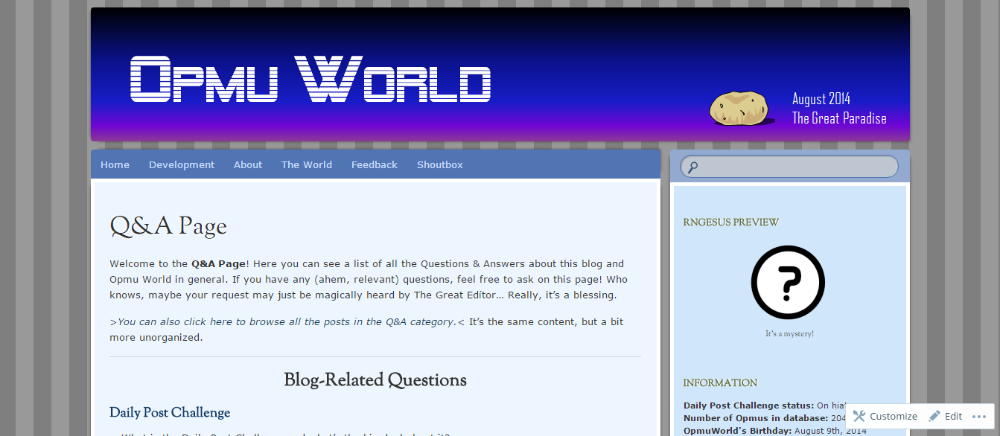

Here is a list of my currently online works.

Captain Main's Adventure
Submission & Download LinkA 15 day project created & submitted for the 2014 Indie Game Maker Contest, using RPG Maker VX Ace. Captain Main's Adventure is a RPG game that features an ex-street thug who dreams of finding great treasures. The anti-hero becomes a pirate and sets sail on a comical adventure.

OpmuWorld @ WordPress
Link to WebsiteOpmuWorld @ WordPress is one of my personal projects that started back in August 2014. It features a story world of my own (in collaboration with my two sisters over the past 10 years) with recently renewed characters, setting, and other world-building elements. This is a private blog, so I could only offer a screenshot.